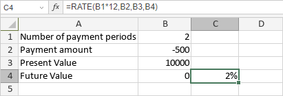

RATE funkcija
RATE funkcija je jedna od finansijskih funkcija. Koristi se za izračunavanje kamatne stope za investiciju na osnovu konstantnog rasporeda uplata.
Sintaksa
RATE(nper, pmt, pv, [fv], [type], [guess])
RATE funkcija ima sledeće argumente:
| Argument | Opis |
|---|---|
| nper | Broj uplata. |
| pmt | Iznos uplate. |
| pv | Trenutna vrednost uplata. |
| fv | Buduća vrednost (npr. stanje novca nakon poslednje uplate). Opcioni argument. Ako se izostavi, funkcija pretpostavlja da je fv 0. |
| type | Period kada su uplate dospele. Opcioni argument. Ako je 0 ili izostavljen, funkcija pretpostavlja da su uplate na kraju perioda. Ako je type 1, uplate su na početku perioda. |
| guess | Procena kolika će biti kamatna stopa. Opcioni argument. Ako se izostavi, funkcija pretpostavlja da je guess 10%. |
Napomene
Isplate (kao što su depoziti na štednju) predstavljaju negativne brojeve; primljeni novac (kao što su dividende) predstavljaju pozitivne brojeve. Jedinice za guess i nper moraju biti konzistentne: koristiti N%/12 za guess i N*12 za nper kod mesečnih uplata, N%/4 za guess i N*4 za nper kod kvartalnih uplata, N% za guess i N za nper kod godišnjih uplata.
Kako primeniti RATE funkciju.
Primeri
Slika ispod prikazuje rezultat koji vraća RATE funkcija.
